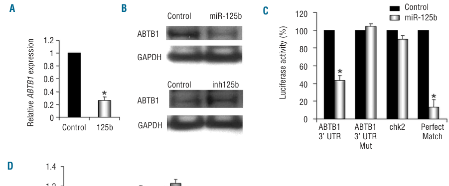
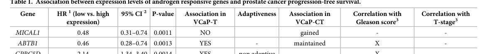

ABTB1 is a cytoplasmic ankyrin-repeat and BTB/POZ-domain protein with multiple splice isoforms. It was originally described as BPOZ/elongation factor 1A-binding protein and as a PTEN-responsive growth-suppressive factor in cancer cell assays. Its domain architecture and interaction with CUL3 support membership in a cullin-associated ubiquitin ligase complex, most plausibly a CRL3 context, but specific physiological substrates and direct ubiquitin-ligase substrate-adaptor activity remain poorly characterized.
| GO Term | Evidence | Action | Reason |
|---|---|---|---|
|
GO:0000151
ubiquitin ligase complex
|
IBA
GO_REF:0000033 |
MODIFY |
Summary: ABTB1 has BTB/POZ and ankyrin-repeat architecture and is linked to CUL3 in interaction data. The existing IBA ubiquitin-ligase-complex call is directionally sound, but the more informative complex context is a Cul3-RING ubiquitin ligase complex rather than the broad parent term.
Reason: The PANTHER IBA and local UniProt/GOA evidence support ubiquitin ligase complex membership, and UniProt lists an ABTB1-CUL3 interaction. Because ABTB1 is a BTB/POZ-domain protein and the PN projection places it in the Cul3 substrate receptor branch, the appropriate replacement is the specific CRL3 complex term. This should not be extended to catalytic E3 ligase activity or substrate-adaptor activity without ABTB1-specific substrate evidence.
Proposed replacements:
Cul3-RING ubiquitin ligase complex
Supporting Evidence:
file:human/ABTB1/ABTB1-uniprot.txt
Q969K4; Q13618: CUL3; NbExp=5
PMID:21145461
a large fraction of cullins are assembled with adaptor modules
file:human/ABTB1/ABTB1-notes.md
For ABTB1, local evidence supports BTB/POZ/ankyrin architecture, CUL3 interaction, and inferred ubiquitin ligase complex membership
|
|
GO:0005737
cytoplasm
|
IBA
GO_REF:0000033 |
ACCEPT |
Summary: Cytoplasmic localization is consistent with UniProt subcellular-location curation and the HPA/GOA localization context.
Reason: ABTB1 is curated by UniProt as cytoplasmic, and the same cellular compartment is represented by independent GOA localization rows. This is a supported location for the protein, although no compartment-specific substrate has been established.
Supporting Evidence:
file:human/ABTB1/ABTB1-uniprot.txt
SUBCELLULAR LOCATION: Cytoplasm
|
|
GO:0005737
cytoplasm
|
IEA
GO_REF:0000044 |
ACCEPT |
Summary: This UniProt subcellular-location mapping is consistent with direct UniProt curation of ABTB1 as cytoplasmic.
Reason: The IEA row is a conservative mapping from UniProt subcellular-location vocabulary and agrees with the IBA cytoplasm and HPA cytosol context.
Supporting Evidence:
file:human/ABTB1/ABTB1-uniprot.txt
SUBCELLULAR LOCATION: Cytoplasm
|
|
GO:0005515
protein binding
|
IPI
PMID:21145461 Dynamics of cullin-RING ubiquitin ligase network revealed by... |
MODIFY |
Summary: PMID:21145461 is the CRL-network proteomics study underlying the ABTB1-CUL3 interaction in GOA/UniProt. The generic protein-binding term should be replaced by the more specific CUL3/cullin-binding term.
Reason: ABTB1-CUL3 association is informative for the proposed CRL3 complex context, but generic protein binding is not an informative molecular-function annotation. The appropriate replacement captures cullin-family protein binding, without asserting substrate-adaptor activity or a known substrate.
Proposed replacements:
cullin family protein binding
Supporting Evidence:
file:human/ABTB1/ABTB1-uniprot.txt
Q969K4; Q13618: CUL3; NbExp=5
PMID:21145461
the abundance of adaptor modules, rather than cycles of neddylation and CAND1 binding, drives CRL network organization
|
|
GO:0005515
protein binding
|
IPI
PMID:25416956 A proteome-scale map of the human interactome network. |
MARK AS OVER ANNOTATED |
Summary: This is a proteome-scale human interactome study. ABTB1 interaction evidence from this source is useful as interaction context, but the GO term protein binding is too generic to describe ABTB1's function.
Reason: The annotation reports high-throughput interaction evidence, including partners such as CUL3 and EEF1A2 in GOA. For ABTB1, the informative curation target is the specific CUL3/cullin-binding and CRL3-complex context; generic protein binding should not be retained as a core molecular function.
Supporting Evidence:
PMID:25416956
A proteome-scale map of the human interactome network
|
|
GO:0005515
protein binding
|
IPI
PMID:28514442 Architecture of the human interactome defines protein commun... |
MARK AS OVER ANNOTATED |
Summary: PMID:28514442 reports BioPlex AP-MS interaction mapping. ABTB1 interactions from this source are high-throughput network context rather than a specific biochemical activity.
Reason: GOA records this as generic protein binding for several ABTB1 partners. The term does not capture ABTB1's likely CRL3-complex role or any specific validated substrate relationship, so it is over-annotated.
Supporting Evidence:
PMID:28514442
BioPlex 2.0 enables systems-level study of protein interactions
|
|
GO:0005515
protein binding
|
IPI
PMID:31515488 Extensive disruption of protein interactions by genetic vari... |
MARK AS OVER ANNOTATED |
Summary: PMID:31515488 contributes high-throughput human protein-interaction evidence, including variant-sensitive interaction context. It does not make generic protein binding an informative ABTB1 function.
Reason: The interaction evidence may be real, but this broad term should be replaced by specific partner/context terms where warranted. It should not be used to infer ABTB1 substrate-adaptor activity without substrate-level evidence.
|
|
GO:0005515
protein binding
|
IPI
PMID:32296183 A reference map of the human binary protein interactome. |
MARK AS OVER ANNOTATED |
Summary: PMID:32296183 is a reference human binary-interactome map. The ABTB1 row is useful as interaction context but not as a specific molecular-function claim.
Reason: Generic protein binding from a large-scale interactome map is not informative for ABTB1. No specific GO molecular function should be inferred from this row beyond partner-level curation when the partner and mechanism justify it.
Supporting Evidence:
PMID:32296183
A reference map of the human binary protein interactome
|
|
GO:0005515
protein binding
|
IPI
PMID:32814053 Interactome Mapping Provides a Network of Neurodegenerative ... |
MARK AS OVER ANNOTATED |
Summary: This neurodegenerative-disease interactome study contributes ABTB1 interaction context, including ATXN1/TARDBP partners in GOA, but does not establish a core ABTB1 molecular function.
Reason: The interaction context is peripheral to the supported ABTB1 CRL3/cytoplasmic complex picture. Generic protein binding is over-annotated and should not be retained as a core function.
|
|
GO:0005515
protein binding
|
IPI
PMID:33961781 Dual proteome-scale networks reveal cell-specific remodeling... |
MARK AS OVER ANNOTATED |
Summary: PMID:33961781 reports dual proteome-scale interaction networks. This supports high-throughput interaction context but not a specific ABTB1 molecular function.
Reason: ABTB1 partners from this dataset are best treated as network context. The generic protein-binding annotation is too broad and should not be a core annotation.
Supporting Evidence:
PMID:33961781
defining interactome structure and dynamics is required to understand cellular diversity
|
|
GO:0005515
protein binding
|
IPI
PMID:40205054 Multimodal cell maps as a foundation for structural and func... |
MARK AS OVER ANNOTATED |
Summary: PMID:40205054 is a multimodal cell-map resource integrating protein interactions and imaging. Its ABTB1 interaction evidence is contextual and does not justify retaining generic protein binding.
Reason: The study is valuable for cell-map context, but protein binding remains an uninformative term for ABTB1. No ABTB1-specific substrate-adaptor activity is established by this row.
Supporting Evidence:
PMID:40205054
yielding protein biophysical interactions and protein IF images for a matched set of more than 5,100 proteins
|
|
GO:0005829
cytosol
|
IDA
GO_REF:0000052 |
ACCEPT |
Summary: HPA-derived cytosol localization is consistent with the broader UniProt cytoplasm annotation.
Reason: Cytosol is a reasonable supported cellular component for ABTB1 and is compatible with the proposed cytoplasmic CRL3-associated context.
Supporting Evidence:
file:human/ABTB1/ABTB1-uniprot.txt
SUBCELLULAR LOCATION: Cytoplasm
|
|
GO:0005737
cytoplasm
|
EXP
PMID:11494141 Growth-suppressive effects of BPOZ and EGR2, two genes invol... |
ACCEPT |
Summary: The original BPOZ/PTEN paper is cited by UniProt for ABTB1 cytoplasmic localization. The cached publication is abstract-only, so the UniProt record is used as local support for this localization statement.
Reason: Cytoplasmic localization is repeatedly represented in ABTB1 curated sources. This localization is valid, while the paper's growth-suppression phenotype should not be over-translated into a detailed GO process without source-level full text.
Supporting Evidence:
file:human/ABTB1/ABTB1-uniprot.txt
SUBCELLULAR LOCATION: Cytoplasm
|
Q: Does ABTB1 have experimentally validated substrates in a CRL3 complex, or is the PN Cul3 substrate receptor assignment currently based only on domain architecture and CUL3 interaction?
Suggested experts: GO ubiquitin-proteasome curators, Proteostasis Network UPS curators
Q: Should ABTB1 be annotated to GO:1990756 only after a substrate-bridging assay is available, or is CUL3 binding plus BTB-BACK/ankyrin architecture sufficient for a conservative IBA-style molecular-function inference?
Suggested experts: GO molecular function editors, PAINT curators
Q: Are the EEF1A/EEF1D interactions a biologically meaningful ABTB1 function or a non-core interaction context from interactome datasets, and should the UniProt-only translation elongation factor activity IEA be treated as an erroneous keyword mapping?
Suggested experts: UniProt curators, translation-factor specialists
Q: Given that ABTB1 is a direct miR-125b target and an anti-proliferative factor in myeloid models, yet higher ABTB1 expression correlates with worse progression-free survival in prostate cancer, are these context- or isoform-dependent roles, and should any of them map to a defensible GO biological-process term rather than remaining as correlative disease context?
Suggested experts: GO biological-process editors, cancer biology curators
Experiment: Test miR-125b-dependent regulation of endogenous ABTB1 across cell types using miR-125b mimic/inhibitor with ABTB1 mRNA/protein readouts and 3'UTR reporter controls, then assess whether ABTB1 restoration reverses miR-125b-driven proliferation.
Hypothesis: miR-125b post-transcriptionally represses ABTB1 to relieve its anti-proliferative activity, and this axis operates in non-myeloid contexts such as prostate epithelium.
Type: regulatory axis validation
Experiment: Perform ABTB1 affinity purification under native expression or low-level tagged rescue, quantify CUL3/RBX1 association, and combine ABTB1 knockout or degron-stabilization proteomics with neddylation inhibition to identify candidate ABTB1-dependent substrates.
Hypothesis: ABTB1 is a substrate-recognition subunit of a CUL3-RBX1 ubiquitin ligase complex.
Type: CRL3 substrate identification
Experiment: Reconstitute ABTB1, CUL3-RBX1, and candidate substrates in vitro and test ternary complex formation plus substrate ubiquitination, using ABTB1 BTB/POZ-domain mutants as CUL3-binding controls.
Hypothesis: ABTB1 directly bridges CUL3 to one or more substrate proteins.
Type: substrate-bridging assay
Experiment: Validate ABTB1 interactions with EEF1A2 and EEF1D by reciprocal co-IP at endogenous expression levels and test whether ABTB1 perturbation changes elongation-factor localization, stability, or translation output.
Hypothesis: EEF1A/EEF1D interactions represent a reproducible but non-core ABTB1 interaction context.
Type: interaction specificity review
What is not known — curated, literature-grounded statements of the open unknowns (the inverse of core functions).
Gap: ABTB1-specific CRL3 substrate-adaptor activity remains inferential because no physiological ABTB1 substrate or direct substrate-bridging assay has been established in the reviewed evidence.
OPEN BIOLOGYCURATION MF_DARK
What is known: The review accepts cullin family protein binding and Cul3-RING ubiquitin ligase complex membership. It does not yet assert ubiquitin-like ligase-substrate adaptor activity as a confirmed ABTB1 molecular function.
Significance: Resolving this gap would determine whether ABTB1 should receive a specific substrate-adaptor molecular-function annotation and which biological processes, if any, should be assigned based on the substrates it recruits.
What would resolve it: Endogenous ABTB1-CUL3 complex isolation, substrate-trapping mutants, quantitative ubiquitin-remnant proteomics, and in vitro ternary-complex and ubiquitination assays should identify direct substrates.
Provenance (the field's own admissions):
Gap: The compartment where ABTB1 performs its putative CRL3/scaffold function is not well resolved.
OPEN BIOLOGYCURATION CC_DARK
What is known: UniProt and the review support cytoplasmic/cytosolic context, and interaction resources support CUL3 and EEF1A/EEF1D binding. The gap is whether ABTB1 has a regulated, substrate-specific localization or subcellular pool that explains those interactions.
Significance: Better localization evidence would refine cellular-component annotations and distinguish a generic cytoplasmic scaffold from a specific CRL3, translation factor, or signaling compartment.
What would resolve it: Endogenous tagging or validated antibodies should map ABTB1 localization under basal, PTEN/miRNA, cell-cycle, and proteasome/neddylation-perturbation conditions with CUL3 and candidate substrate colocalization.
Provenance (the field's own admissions):
Gap: ABTB1's anti-proliferative/PTEN-linked role and prostate-cancer expression association remain mechanistically and contextually unresolved.
OPEN BIOLOGYCURATION BP_DARK
What is known: The review accepts that ABTB1 has been linked to PTEN growth-suppressive signaling and is directly regulated by miR-125b in myeloid models, but it does not annotate ABTB1 to a specific cell-cycle, cancer, or signaling biological process from correlative or context-dependent evidence.
Significance: Resolving this gap would determine whether any proliferation, PTEN-pathway, miRNA-regulated, or cancer-relevant GO process is a direct ABTB1 function, or whether these findings remain disease-model context downstream of an unknown substrate/scaffold mechanism.
What would resolve it: Isoform-resolved ABTB1 perturbation and rescue across myeloid and prostate models, combined with substrate identification and PTEN/AR/miRNA pathway epistasis, should define which phenotypes are direct.
Provenance (the field's own admissions):
The research report should be a detailed narrative explaining the function, biological processes, and localization of the gene product. Citations should be given for all claims.
You should prioritize authoritative reviews and primary scientific literature when conducting research. You can supplement
this with annotations you find in gene/protein databases, but these can be outdated or inaccurate.
We are specifically interested in the primary function of the gene - for enzymes, what reaction is catalyzed, and what is the substrate specificity? For transporters, what is the substrate? For structural proteins or adapters, what is the broader structural role? For signaling molecules, what is the role in the pathway.
We are interested in where in or outside the cell the gene product carries out its function.
We are also interested in the signaling or biochemical pathways in which the gene functions. We are less interested in broad pleiotropic effects, except where these elucidate the precise role.
Include evidence where possible. We are interested in both experimental evidence as well as inference from structure, evolution, or bioinformatic analysis. Precise studies should be prioritized over high-throughput, where available.
ABTB1 (ankyrin repeat and BTB/POZ domain-containing protein 1; synonym BPOZ) is a human BTB/POZ-domain protein with ankyrin repeats, best interpreted as a protein–protein interaction scaffold and putative CUL3-type E3 ubiquitin ligase substrate adaptor based on the established role of BTB/POZ proteins in CUL3 complexes. Direct ABTB1 biochemical substrate(s) and definitive subcellular localization are not well established in the retrieved literature, but ABTB1 is repeatedly linked to PTEN growth-suppressive signaling and shows context-dependent associations with proliferation and cancer outcomes. Strong experimental evidence supports post-transcriptional regulation of ABTB1 by miR-125b. Recent clinical/transcriptomic data (2023) support ABTB1 expression as a prognostic correlate in prostate cancer.
The literature and database evidence retrieved aligns with the human gene ABTB1 (Ensembl ENSG00000114626), approved name “ankyrin repeat and BTB domain containing 1,” consistent with the UniProt entry Q969K4 and the stated synonym BPOZ. (OpenTargets Search: -ABTB1)
Multiple sources describe ABTB1 as a mediator of PTEN-dependent growth suppressive signaling and as anti-proliferative/tumor suppressive in some experimental contexts. In a 2023 prostate cancer transcriptomic analysis, the authors summarize prior literature that ABTB1 overexpression inhibits cell growth and G1/S progression in vitro, while noting uncertainty regarding which ABTB1 isoform(s) mediate growth inhibition. (natkin2023adaptiveandnonadaptive pages 14-15)
A 2023 study of prostate cancer cell models under androgen deprivation and castration-tolerant adaptation reports ABTB1 as one of the androgen receptor (AR)-associated genes whose expression changes with testosterone depletion and is maintained in adapted cells. The authors interpret their results to suggest that low ABTB1 expression correlates with better progression-free survival and propose ABTB1 inhibition as a hypothesis for suppressing prostate cancer cell proliferation. (natkin2023adaptiveandnonadaptive pages 14-15)
Key quantitative statistic (TCGA PRAD cohort multivariable Cox model):
* For ABTB1, hazard ratio (HR) = 0.46 for low vs high expression, 95% CI 0.28–0.74, p = 0.0013 for biochemical relapse or clinical tumor progression. (natkin2023adaptiveandnonadaptive media 40d79004)
Interpretation: HR < 1 indicates lower risk for the low-expression group (per the table definition), implying that higher ABTB1 expression is associated with worse progression-free survival in this dataset/modeling frame. (natkin2023adaptiveandnonadaptive media 40d79004)
Open Targets aggregates ABTB1 disease-association evidence including GWAS credible sets and a CRISPRi screen in glutamatergic neurons (peroxidized lipid phenotype). Reported target–disease association scores include refractive error (0.2878), asthma (0.2681), and neurodegenerative disease (0.1988), among others. While these scores are not effect sizes, they highlight domains where ABTB1 may be implicated by genetics and functional screens. (OpenTargets Search: -ABTB1)
A 2024 BTB-domain-focused structural/biophysical thesis emphasizes that BTB proteins can serve as E3 ligase substrate adaptors and that atypical/tandem BTB architectures exhibit heterogeneity in oligomerization and CUL3 binding affinities across the class; this supports the plausibility that ABTB1’s BTB/POZ architecture could engage CUL3-like systems, although ABTB1-specific binding constants were not extracted from the available pages. (walma2024structureandfunction pages 1-8)
In myeloid cell-line models, ABTB1 is experimentally supported as a direct miR-125b target:
* ABTB1 mRNA down-regulated 3.9-fold in miR-125b overexpressing cells vs control. (bousquet2012microrna125btransformsmyeloid pages 6-7)
* ~60% decrease in ABTB1 protein with miR-125b overexpression and ~40% increase with miR-125b inhibitor. (bousquet2012microrna125btransformsmyeloid pages 6-7)
* Luciferase 3'UTR reporter assay validated direct targeting (loss of repression when target site mutated). (bousquet2012microrna125btransformsmyeloid pages 6-7)
Visual evidence supporting these claims (Figure 4 panels with qRT-PCR, Western blot, and luciferase assay) was retrieved. (bousquet2012microrna125btransformsmyeloid media a60edfbb, bousquet2012microrna125btransformsmyeloid media f18b171a)
As above, ABTB1 low vs high expression HR 0.46 (95% CI 0.28–0.74; p=0.0013) for progression-free survival in a multivariable Cox regression on TCGA prostate adenocarcinoma data. (natkin2023adaptiveandnonadaptive media 40d79004)
Open Targets provides association and evidence scores (platform-derived metrics):
* Target–disease association scores: refractive error 0.2878; asthma 0.2681; neurodegenerative disease 0.1988; abnormality of refraction 0.1418; sialolithiasis 0.0452. (OpenTargets Search: -ABTB1)
* Evidence item scores include 0.77882 and 0.72245 (GWAS credible sets) and 0.52786 (glutamatergic neuron CRISPRi screen). (OpenTargets Search: -ABTB1)
| Topic | Key findings | Evidence type | Source (first author year) | Publication date | URL | Notes/limitations |
|---|---|---|---|---|---|---|
| identity/domains | ABTB1 is the human gene/protein targeted here (approved symbol ABTB1; synonym BPOZ), encoding an ankyrin repeat and BTB domain-containing protein; Open Targets lists ENSG00000114626 with approved name “ankyrin repeat and BTB domain containing 1.” (OpenTargets Search: -ABTB1) | Database annotation / target curation | Open Targets | 2025 platform paper; underlying evidence earlier | https://platform.opentargets.org/target/ENSG00000114626 | Database-level identity support; does not by itself prove mechanism. |
| identity/domains | BTB/POZ-domain proteins are a large eukaryotic family proposed to act as substrate-specific adaptors for CUL3 ubiquitin ligases; this family-level model is consistent with ABTB1’s BTB/POZ architecture. (geyer2003btbpozdomainproteins pages 7-8, geyer2003btbpozdomainproteins pages 1-2, geyer2003btbpozdomainproteins pages 4-6) | Biochemical complex biology / family inference | Geyer 2003 | Sep 2003 | https://doi.org/10.1016/S1097-2765(03)00341-1 | Evidence is family-level and yeast-centered; not direct human ABTB1 biochemistry. |
| molecular function | ABTB1 is described as a tumor suppressor and mediator of PTEN growth-suppressive signaling; prior work cited in later papers reports that ABTB1 overexpression decreases proliferation and inhibits G1/S progression in vitro. (bousquet2012microrna125btransformsmyeloid pages 6-7, natkin2023adaptiveandnonadaptive pages 14-15) | Functional cell biology / literature synthesis | Bousquet 2012; Nätkin 2023 | Nov 2012; Feb 2023 | https://doi.org/10.3324/haematol.2011.061515 ; https://doi.org/10.1371/journal.pone.0281645 | Primary direct mechanistic substrate of ABTB1 remains unclear in available context. |
| regulation | In myeloid cells, ABTB1 is a direct miR-125b target: ABTB1 mRNA was down-regulated 3.9-fold, protein decreased by ~60% with miR-125b overexpression, and increased ~40% with miR-125b inhibitor; luciferase assays validated direct 3'UTR targeting. (bousquet2012microrna125btransformsmyeloid pages 6-7, bousquet2012microrna125btransformsmyeloid media a60edfbb, bousquet2012microrna125btransformsmyeloid media f18b171a) | Expression analysis / reporter assay / immunoblot | Bousquet 2012 | Nov 2012 | https://doi.org/10.3324/haematol.2011.061515 | Strong evidence for post-transcriptional regulation; effect shown in hematopoietic model rather than all tissues. |
| pathways | ABTB1 is repeatedly linked to PTEN growth-suppressive signaling; in prostate cancer transcriptomic analysis it remained androgen receptor (AR)-associated under androgen-deprivation adaptation. (natkin2023adaptiveandnonadaptive pages 14-15) | Expression/pathway analysis | Nätkin 2023 | Feb 2023 | https://doi.org/10.1371/journal.pone.0281645 | Pathway placement is partly based on prior literature cited by authors rather than direct pathway biochemistry in this paper. |
| localization | Direct ABTB1 localization evidence was limited in the retrieved human-focused context; no robust subcellular localization for human ABTB1 was established from the cited excerpts. (natkin2023adaptiveandnonadaptive pages 14-15) | Evidence gap | — | — | — | Important limitation: localization should not be overstated from current context. |
| disease/clinical associations | In prostate cancer, ABTB1 low vs high expression was associated with better progression-free survival in TCGA-based Cox analysis; authors therefore suggested ABTB1 inhibition might suppress prostate cancer cell proliferation. (natkin2023adaptiveandnonadaptive pages 14-15, natkin2023adaptiveandnonadaptive media 40d79004) | Expression/survival analysis | Nätkin 2023 | Feb 2023 | https://doi.org/10.1371/journal.pone.0281645 | Association is correlative and context-specific; contrasts with anti-proliferative narrative in other systems, implying context dependence or isoform complexity. |
| disease/clinical associations | Open Targets reports ABTB1 associations with refractive error, asthma, neurodegenerative disease, abnormality of refraction, and sialolithiasis, supported by GWAS credible sets and a glutamatergic-neuron CRISPRi screen. (OpenTargets Search: -ABTB1) | Genetic association / functional genomics | Open Targets | 2025 platform paper; evidence PMIDs earlier | https://platform.opentargets.org/target/ENSG00000114626 | Platform scores support prioritization, but causal mechanism and effect sizes are not provided in the retrieved context. |
| quantitative stats | Prostate cancer progression-free survival: ABTB1 low vs high expression HR 0.46, 95% CI 0.28–0.74, p=0.0013. (natkin2023adaptiveandnonadaptive media 40d79004) | Multivariable survival statistic | Nätkin 2023 | Feb 2023 | https://doi.org/10.1371/journal.pone.0281645 | Statistic comes from table image extraction; clinical endpoint defined as biochemical relapse or clinical tumor progression. |
| quantitative stats | Open Targets association scores for ABTB1 include refractive error 0.2878, asthma 0.2681, neurodegenerative disease 0.1988, abnormality of refraction 0.1418, and sialolithiasis 0.0452; individual evidence scores included 0.77882, 0.72245, and 0.52786 for specific evidence items. (OpenTargets Search: -ABTB1) | Prioritization scores / platform metrics | Open Targets | 2025 platform paper | https://platform.opentargets.org/target/ENSG00000114626 | Scores are platform-derived prioritization metrics, not direct effect sizes like odds ratios or hazard ratios. |
Table: This table summarizes the main experimentally or computationally supported functional annotation evidence for human ABTB1 (UniProt Q969K4). It highlights what is known with direct support, what remains inferential, and where the strongest quantitative evidence currently lies.
Key sources include:
* Geyer et al., Molecular Cell (Sep 2003). https://doi.org/10.1016/S1097-2765(03)00341-1 (geyer2003btbpozdomainproteins pages 1-2)
* Bousquet et al., Haematologica (Nov 2012). https://doi.org/10.3324/haematol.2011.061515 (bousquet2012microrna125btransformsmyeloid pages 6-7)
* Nätkin et al., PLOS ONE (Feb 21, 2023). https://doi.org/10.1371/journal.pone.0281645 (natkin2023adaptiveandnonadaptive pages 14-15, natkin2023adaptiveandnonadaptive media 40d79004)
* Open Targets Platform (evidence aggregated; platform paper 2025). https://platform.opentargets.org/target/ENSG00000114626 (OpenTargets Search: -ABTB1)
References
(OpenTargets Search: -ABTB1): Open Targets Query (-ABTB1, 5 results). Buniello, A. et al. (2025). Open Targets Platform: facilitating therapeutic hypotheses building in drug discovery. Nucleic Acids Research.
(geyer2003btbpozdomainproteins pages 1-2): Rory Geyer, Susan Wee, Scott Anderson, John Yates, and Dieter A. Wolf. Btb/poz domain proteins are putative substrate adaptors for cullin 3 ubiquitin ligases. Molecular cell, 12 3:783-90, Sep 2003. URL: https://doi.org/10.1016/s1097-2765(03)00341-1, doi:10.1016/s1097-2765(03)00341-1. This article has 428 citations and is from a highest quality peer-reviewed journal.
(geyer2003btbpozdomainproteins pages 4-6): Rory Geyer, Susan Wee, Scott Anderson, John Yates, and Dieter A. Wolf. Btb/poz domain proteins are putative substrate adaptors for cullin 3 ubiquitin ligases. Molecular cell, 12 3:783-90, Sep 2003. URL: https://doi.org/10.1016/s1097-2765(03)00341-1, doi:10.1016/s1097-2765(03)00341-1. This article has 428 citations and is from a highest quality peer-reviewed journal.
(natkin2023adaptiveandnonadaptive pages 14-15): Reetta Nätkin, Pasi Pennanen, Heimo Syvälä, Merja Bläuer, Juha Kesseli, Teuvo L. J. Tammela, Matti Nykter, and Teemu J. Murtola. Adaptive and non-adaptive gene expression responses in prostate cancer during androgen deprivation. PLOS ONE, 18:e0281645, Feb 2023. URL: https://doi.org/10.1371/journal.pone.0281645, doi:10.1371/journal.pone.0281645. This article has 3 citations and is from a peer-reviewed journal.
(natkin2023adaptiveandnonadaptive media 40d79004): Reetta Nätkin, Pasi Pennanen, Heimo Syvälä, Merja Bläuer, Juha Kesseli, Teuvo L. J. Tammela, Matti Nykter, and Teemu J. Murtola. Adaptive and non-adaptive gene expression responses in prostate cancer during androgen deprivation. PLOS ONE, 18:e0281645, Feb 2023. URL: https://doi.org/10.1371/journal.pone.0281645, doi:10.1371/journal.pone.0281645. This article has 3 citations and is from a peer-reviewed journal.
(walma2024structureandfunction pages 1-8): DA Cruz Walma. Structure and function of atypical btb domains in health and disease. Unknown journal, 2024.
(bousquet2012microrna125btransformsmyeloid pages 6-7): Marina Bousquet, D. Nguyen, Cynthia Chen, L. Shields, and H. Lodish. Microrna-125b transforms myeloid cell lines by repressing multiple mrna. Haematologica, 97:1713-1721, Nov 2012. URL: https://doi.org/10.3324/haematol.2011.061515, doi:10.3324/haematol.2011.061515. This article has 86 citations.
(bousquet2012microrna125btransformsmyeloid media a60edfbb): Marina Bousquet, D. Nguyen, Cynthia Chen, L. Shields, and H. Lodish. Microrna-125b transforms myeloid cell lines by repressing multiple mrna. Haematologica, 97:1713-1721, Nov 2012. URL: https://doi.org/10.3324/haematol.2011.061515, doi:10.3324/haematol.2011.061515. This article has 86 citations.
(bousquet2012microrna125btransformsmyeloid media f18b171a): Marina Bousquet, D. Nguyen, Cynthia Chen, L. Shields, and H. Lodish. Microrna-125b transforms myeloid cell lines by repressing multiple mrna. Haematologica, 97:1713-1721, Nov 2012. URL: https://doi.org/10.3324/haematol.2011.061515, doi:10.3324/haematol.2011.061515. This article has 86 citations.
(geyer2003btbpozdomainproteins pages 6-7): Rory Geyer, Susan Wee, Scott Anderson, John Yates, and Dieter A. Wolf. Btb/poz domain proteins are putative substrate adaptors for cullin 3 ubiquitin ligases. Molecular cell, 12 3:783-90, Sep 2003. URL: https://doi.org/10.1016/s1097-2765(03)00341-1, doi:10.1016/s1097-2765(03)00341-1. This article has 428 citations and is from a highest quality peer-reviewed journal.
(geyer2003btbpozdomainproteins pages 7-8): Rory Geyer, Susan Wee, Scott Anderson, John Yates, and Dieter A. Wolf. Btb/poz domain proteins are putative substrate adaptors for cullin 3 ubiquitin ligases. Molecular cell, 12 3:783-90, Sep 2003. URL: https://doi.org/10.1016/s1097-2765(03)00341-1, doi:10.1016/s1097-2765(03)00341-1. This article has 428 citations and is from a highest quality peer-reviewed journal.


ABTB1 is reviewed for the Human Proteostasis Network batch because the PN projection places it in the UPS Cul3 substrate receptor branch. The PN projection for ABTB1 is one candidate addition: GO:1990756 ubiquitin-like ligase-substrate adaptor activity, from Ubiquitin Proteasome System|E3 ubiquitin and UBL ligases|Cul3 substrate receptor|BTB-BACK|ankyrin.
I am treating that projection as context only for this review. The PN mapping audit marks the Cul3 substrate receptor mapping as requiring manual gene-level review before changing a gene review, and the UPS branch is domain-heavy. For ABTB1, local evidence supports BTB/POZ/ankyrin architecture, CUL3 interaction, and inferred ubiquitin ligase complex membership, but I did not find ABTB1-specific substrate identification or a direct assay showing that ABTB1 bridges CUL3 to a substrate. Therefore I do not add GO:1990756 as a new annotation in this review.
ABTB1/BPOZ was cloned as a 478 aa protein with an N-terminal ankyrin repeat and two BTB/POZ domains [PMID:10891360 "A novel human gene containing an ankyrin repeat and BTB/POZ domains (BPOZ) was isolated from a human leukocyte cDNA library"; PMID:10891360 "Sequence pattern analysis shows that BPOZ contains an N-terminal ankyrin repeat, a bipartite nuclear localization signal and two BTB/POZ domains"]. The same paper found ubiquitous fetal expression and proposed involvement in protein-protein interaction/complex formation [PMID:10891360 "ubiquitously expressed in all fetal tissues examined"; PMID:10891360 "functionally involved in protein-protein interaction, perhaps in forming protein complexes"].
UniProt summarizes ABTB1 as cytoplasmic and as a possible mediator of PTEN growth-suppressive signaling [file:human/ABTB1/ABTB1-uniprot.txt "May act as a mediator of the PTEN growth-suppressive"; file:human/ABTB1/ABTB1-uniprot.txt "SUBCELLULAR LOCATION: Cytoplasm"]. The PTEN-response paper reports that BPOZ overexpression suppresses cancer cell growth and G1/S progression, while antisense knockdown accelerates growth [PMID:11494141 "BPOZ were able to suppress growth of cancer cells"; PMID:11494141 "over-expression of BPOZ inhibited progression of the cell cycle at the G(1)/S transition"; PMID:11494141 "Anti-sense oligonucleotides for BPOZ or EGR2 effectively inhibited their expression, and cell growth was accelerated"].
The strongest proteostasis-relevant evidence is CUL3 association plus domain architecture. UniProt lists an ABTB1-CUL3 interaction with multiple experiments [file:human/ABTB1/ABTB1-uniprot.txt "Q969K4; Q13618: CUL3; NbExp=5"]. The Bennett et al. CRL-network paper provides the broader cullin-ligase proteomics context, reporting that cullins are assembled with adaptor modules and that adaptor-module abundance drives CRL network organization [PMID:21145461 "a large fraction of cullins are assembled with adaptor modules"; PMID:21145461 "the abundance of adaptor modules, rather than cycles of neddylation and CAND1 binding, drives CRL network organization"]. This supports a specific replacement of generic CUL3-linked protein binding with cullin family protein binding and supports refining ubiquitin ligase complex toward Cul3-RING ubiquitin ligase complex. It does not, by itself, establish a known ABTB1 substrate.
The remaining IntAct protein-binding rows are mostly large-scale interactome evidence for EEF1A2, EEF1D, ZBTB21, ATXN1, TARDBP, and additional CUL3 interactions. These data support physical-interaction context but the generic protein binding term is not informative as a molecular function. I mark these rows as over-annotated rather than using them to infer translation elongation factor activity, neurodegeneration-specific function, or broad proteostasis function.
UniProt lists three GO rows that were not present in the QuickGO GOA file used to seed this review: nucleolus, plasma membrane, and translation elongation factor activity [file:human/ABTB1/ABTB1-uniprot.txt "GO; GO:0005730; C:nucleolus; IDA:HPA"; file:human/ABTB1/ABTB1-uniprot.txt "GO; GO:0005886; C:plasma membrane; IDA:HPA"; file:human/ABTB1/ABTB1-uniprot.txt "GO; GO:0003746; F:translation elongation factor activity"]. The two HPA localization rows may reflect broader or condition-specific localization, but they are not in the seeded GOA file. The translation elongation factor activity IEA looks especially suspect: ABTB1 binds EEF1A2 reproducibly [file:human/ABTB1/ABTB1-uniprot.txt "Q969K4; Q05639: EEF1A2; NbExp=12"], but local evidence does not show that ABTB1 itself has elongation factor activity.
Falcon deep research was started for ABTB1 with perplexity-lite fallback on 2026-06-03. Falcon timed out after 600 seconds and did not produce ABTB1-deep-research-falcon.md. The configured fallback then failed with a Perplexity API 401 quota error and did not produce ABTB1-deep-research-perplexity-lite.md.
Because both providers failed, this review relies on the local UniProt record, GOA file, cached publications, fetched PANTHER family data, and PN projection/mapping-audit files. If a later Falcon/fallback report identifies direct ABTB1 substrate-adaptor evidence, the main YAML should be updated to reconsider GO:1990756; otherwise this review remains intentionally conservative about the PN projection.
A Falcon (Edison Scientific) deep research report was generated on 2026-06-07 (ABTB1-deep-research-falcon.md), superseding the earlier failed run noted above. Key findings, emphasizing what is NEW relative to the existing review:
PMID provenance verified via PubMed metadata for the two new primary references added to the YAML: PMID:22689670 (Bousquet 2012, Haematologica, "MicroRNA-125b transforms myeloid cell lines by repressing multiple mRNA.") and PMID:36809527 (Nätkin 2023, PLoS One, "Adaptive and non-adaptive gene expression responses in prostate cancer during androgen deprivation.").
UPS|E3 ubiquitin and UBL ligases|Cul3 substrate receptor|BTB-BACK|ankyrin ; PN-node mapping: subtype/type (BTB-BACK,ankyrin)=no_mapping; group Cul3 substrate receptor=mapped→GO:1990756 ubiquitin-like ligase-substrate adaptor activity (new_to_goa); class E3...ligases=context_only (GO:0061630 too_broad); branch UPS=no_mapping.Cul3 substrate receptor→GO:1990756 should be treated as non-propagating for ABTB1 until a substrate-bridging assay exists; the review's CRL3-complex membership (GO:0031463) is the appropriate landing point instead. Class-node GO:0061630 correctly context_only. The PN MF projection is broader/stronger than evidence supports — analogous to the rejected-projection precedent.This file is generated from the current PROTEOSTASIS phase-1 dossier and local gene-review artifacts. Edit the source review, PN mapping, or dossier rather than this generated note when correcting the underlying curation.
id: Q969K4
gene_symbol: ABTB1
product_type: PROTEIN
status: COMPLETE
taxon:
id: NCBITaxon:9606
label: Homo sapiens
description: >-
ABTB1 is a cytoplasmic ankyrin-repeat and BTB/POZ-domain protein with multiple
splice isoforms. It was originally described as BPOZ/elongation factor 1A-binding
protein and as a PTEN-responsive growth-suppressive factor in cancer cell assays.
Its domain architecture and interaction with CUL3 support membership in a
cullin-associated ubiquitin ligase complex, most plausibly a CRL3 context, but
specific physiological substrates and direct ubiquitin-ligase substrate-adaptor
activity remain poorly characterized.
alternative_products:
- name: 2 {ECO:0000269|PubMed:10891360, ECO:0000269|PubMed:11494141}
id: Q969K4-1
- name: 1 {ECO:0000269|PubMed:11494141} (BPOZ-1)
id: Q969K4-2
sequence_note: VSP_052148
- name: 3 {ECO:0000269|PubMed:11494141} (BPOZ-3)
id: Q969K4-3
sequence_note: VSP_052149
- name: 4 {ECO:0000269|PubMed:14702039}
id: Q969K4-4
sequence_note: VSP_052150, VSP_052151, VSP_052152, VSP_052153
existing_annotations:
- term:
id: GO:0000151
label: ubiquitin ligase complex
evidence_type: IBA
original_reference_id: GO_REF:0000033
qualifier: part_of
review:
summary: >-
ABTB1 has BTB/POZ and ankyrin-repeat architecture and is linked to CUL3 in
interaction data. The existing IBA ubiquitin-ligase-complex call is directionally
sound, but the more informative complex context is a Cul3-RING ubiquitin ligase
complex rather than the broad parent term.
action: MODIFY
reason: >-
The PANTHER IBA and local UniProt/GOA evidence support ubiquitin ligase complex
membership, and UniProt lists an ABTB1-CUL3 interaction. Because ABTB1 is a
BTB/POZ-domain protein and the PN projection places it in the Cul3 substrate
receptor branch, the appropriate replacement is the specific CRL3 complex term.
This should not be extended to catalytic E3 ligase activity or substrate-adaptor
activity without ABTB1-specific substrate evidence.
proposed_replacement_terms:
- id: GO:0031463
label: Cul3-RING ubiquitin ligase complex
additional_reference_ids:
- PMID:21145461
- file:human/ABTB1/ABTB1-uniprot.txt
- file:human/ABTB1/ABTB1-notes.md
supported_by:
- reference_id: file:human/ABTB1/ABTB1-uniprot.txt
supporting_text: "Q969K4; Q13618: CUL3; NbExp=5"
- reference_id: PMID:21145461
supporting_text: "a large fraction of cullins are assembled with adaptor modules"
- reference_id: file:human/ABTB1/ABTB1-notes.md
supporting_text: >-
For ABTB1, local evidence supports BTB/POZ/ankyrin architecture, CUL3 interaction,
and inferred ubiquitin ligase complex membership
- term:
id: GO:0005737
label: cytoplasm
evidence_type: IBA
original_reference_id: GO_REF:0000033
qualifier: is_active_in
review:
summary: >-
Cytoplasmic localization is consistent with UniProt subcellular-location curation
and the HPA/GOA localization context.
action: ACCEPT
reason: >-
ABTB1 is curated by UniProt as cytoplasmic, and the same cellular compartment is
represented by independent GOA localization rows. This is a supported location for
the protein, although no compartment-specific substrate has been established.
additional_reference_ids:
- file:human/ABTB1/ABTB1-uniprot.txt
supported_by:
- reference_id: file:human/ABTB1/ABTB1-uniprot.txt
supporting_text: "SUBCELLULAR LOCATION: Cytoplasm"
- term:
id: GO:0005737
label: cytoplasm
evidence_type: IEA
original_reference_id: GO_REF:0000044
qualifier: located_in
review:
summary: >-
This UniProt subcellular-location mapping is consistent with direct UniProt
curation of ABTB1 as cytoplasmic.
action: ACCEPT
reason: >-
The IEA row is a conservative mapping from UniProt subcellular-location vocabulary
and agrees with the IBA cytoplasm and HPA cytosol context.
additional_reference_ids:
- file:human/ABTB1/ABTB1-uniprot.txt
supported_by:
- reference_id: file:human/ABTB1/ABTB1-uniprot.txt
supporting_text: "SUBCELLULAR LOCATION: Cytoplasm"
- term:
id: GO:0005515
label: protein binding
evidence_type: IPI
original_reference_id: PMID:21145461
qualifier: enables
review:
summary: >-
PMID:21145461 is the CRL-network proteomics study underlying the ABTB1-CUL3
interaction in GOA/UniProt. The generic protein-binding term should be replaced
by the more specific CUL3/cullin-binding term.
action: MODIFY
reason: >-
ABTB1-CUL3 association is informative for the proposed CRL3 complex context, but
generic protein binding is not an informative molecular-function annotation. The
appropriate replacement captures cullin-family protein binding, without asserting
substrate-adaptor activity or a known substrate.
proposed_replacement_terms:
- id: GO:0097602
label: cullin family protein binding
additional_reference_ids:
- file:human/ABTB1/ABTB1-uniprot.txt
- file:human/ABTB1/ABTB1-notes.md
supported_by:
- reference_id: file:human/ABTB1/ABTB1-uniprot.txt
supporting_text: "Q969K4; Q13618: CUL3; NbExp=5"
- reference_id: PMID:21145461
supporting_text: "the abundance of adaptor modules, rather than cycles of neddylation and CAND1 binding, drives CRL network organization"
- term:
id: GO:0005515
label: protein binding
evidence_type: IPI
original_reference_id: PMID:25416956
qualifier: enables
review:
summary: >-
This is a proteome-scale human interactome study. ABTB1 interaction evidence from
this source is useful as interaction context, but the GO term protein binding is
too generic to describe ABTB1's function.
action: MARK_AS_OVER_ANNOTATED
reason: >-
The annotation reports high-throughput interaction evidence, including partners
such as CUL3 and EEF1A2 in GOA. For ABTB1, the informative curation target is the
specific CUL3/cullin-binding and CRL3-complex context; generic protein binding
should not be retained as a core molecular function.
supported_by:
- reference_id: PMID:25416956
supporting_text: "A proteome-scale map of the human interactome network"
- term:
id: GO:0005515
label: protein binding
evidence_type: IPI
original_reference_id: PMID:28514442
qualifier: enables
review:
summary: >-
PMID:28514442 reports BioPlex AP-MS interaction mapping. ABTB1 interactions from
this source are high-throughput network context rather than a specific biochemical
activity.
action: MARK_AS_OVER_ANNOTATED
reason: >-
GOA records this as generic protein binding for several ABTB1 partners. The term
does not capture ABTB1's likely CRL3-complex role or any specific validated
substrate relationship, so it is over-annotated.
supported_by:
- reference_id: PMID:28514442
supporting_text: "BioPlex 2.0 enables systems-level study of protein interactions"
- term:
id: GO:0005515
label: protein binding
evidence_type: IPI
original_reference_id: PMID:31515488
qualifier: enables
review:
summary: >-
PMID:31515488 contributes high-throughput human protein-interaction evidence,
including variant-sensitive interaction context. It does not make generic
protein binding an informative ABTB1 function.
action: MARK_AS_OVER_ANNOTATED
reason: >-
The interaction evidence may be real, but this broad term should be replaced by
specific partner/context terms where warranted. It should not be used to infer
ABTB1 substrate-adaptor activity without substrate-level evidence.
- term:
id: GO:0005515
label: protein binding
evidence_type: IPI
original_reference_id: PMID:32296183
qualifier: enables
review:
summary: >-
PMID:32296183 is a reference human binary-interactome map. The ABTB1 row is
useful as interaction context but not as a specific molecular-function claim.
action: MARK_AS_OVER_ANNOTATED
reason: >-
Generic protein binding from a large-scale interactome map is not informative for
ABTB1. No specific GO molecular function should be inferred from this row beyond
partner-level curation when the partner and mechanism justify it.
supported_by:
- reference_id: PMID:32296183
supporting_text: "A reference map of the human binary protein interactome"
- term:
id: GO:0005515
label: protein binding
evidence_type: IPI
original_reference_id: PMID:32814053
qualifier: enables
review:
summary: >-
This neurodegenerative-disease interactome study contributes ABTB1 interaction
context, including ATXN1/TARDBP partners in GOA, but does not establish a core
ABTB1 molecular function.
action: MARK_AS_OVER_ANNOTATED
reason: >-
The interaction context is peripheral to the supported ABTB1 CRL3/cytoplasmic
complex picture. Generic protein binding is over-annotated and should not be
retained as a core function.
- term:
id: GO:0005515
label: protein binding
evidence_type: IPI
original_reference_id: PMID:33961781
qualifier: enables
review:
summary: >-
PMID:33961781 reports dual proteome-scale interaction networks. This supports
high-throughput interaction context but not a specific ABTB1 molecular function.
action: MARK_AS_OVER_ANNOTATED
reason: >-
ABTB1 partners from this dataset are best treated as network context. The generic
protein-binding annotation is too broad and should not be a core annotation.
supported_by:
- reference_id: PMID:33961781
supporting_text: "defining interactome structure and dynamics is required to understand cellular diversity"
- term:
id: GO:0005515
label: protein binding
evidence_type: IPI
original_reference_id: PMID:40205054
qualifier: enables
review:
summary: >-
PMID:40205054 is a multimodal cell-map resource integrating protein interactions
and imaging. Its ABTB1 interaction evidence is contextual and does not justify
retaining generic protein binding.
action: MARK_AS_OVER_ANNOTATED
reason: >-
The study is valuable for cell-map context, but protein binding remains an
uninformative term for ABTB1. No ABTB1-specific substrate-adaptor activity is
established by this row.
supported_by:
- reference_id: PMID:40205054
supporting_text: "yielding protein biophysical interactions and protein IF images for a matched set of more than 5,100 proteins"
- term:
id: GO:0005829
label: cytosol
evidence_type: IDA
original_reference_id: GO_REF:0000052
qualifier: located_in
review:
summary: >-
HPA-derived cytosol localization is consistent with the broader UniProt
cytoplasm annotation.
action: ACCEPT
reason: >-
Cytosol is a reasonable supported cellular component for ABTB1 and is compatible
with the proposed cytoplasmic CRL3-associated context.
additional_reference_ids:
- file:human/ABTB1/ABTB1-uniprot.txt
supported_by:
- reference_id: file:human/ABTB1/ABTB1-uniprot.txt
supporting_text: "SUBCELLULAR LOCATION: Cytoplasm"
- term:
id: GO:0005737
label: cytoplasm
evidence_type: EXP
original_reference_id: PMID:11494141
qualifier: located_in
review:
summary: >-
The original BPOZ/PTEN paper is cited by UniProt for ABTB1 cytoplasmic
localization. The cached publication is abstract-only, so the UniProt record is
used as local support for this localization statement.
action: ACCEPT
reason: >-
Cytoplasmic localization is repeatedly represented in ABTB1 curated sources.
This localization is valid, while the paper's growth-suppression phenotype should
not be over-translated into a detailed GO process without source-level full text.
additional_reference_ids:
- file:human/ABTB1/ABTB1-uniprot.txt
supported_by:
- reference_id: file:human/ABTB1/ABTB1-uniprot.txt
supporting_text: "SUBCELLULAR LOCATION: Cytoplasm"
references:
- id: GO_REF:0000033
title: Annotation inferences using phylogenetic trees
findings: []
- id: GO_REF:0000044
title: >-
Gene Ontology annotation based on UniProtKB/Swiss-Prot Subcellular Location
vocabulary mapping, accompanied by conservative changes to GO terms applied by
UniProt
findings: []
- id: GO_REF:0000052
title: Gene Ontology annotation based on curation of immunofluorescence data
findings: []
- id: PMID:10891360
title: Molecular cloning and characterization of a novel human gene containing ankyrin repeat and double BTB/POZ domain.
findings:
- statement: >-
ABTB1/BPOZ encodes a 478 amino acid protein with ankyrin-repeat and BTB/POZ
domains and was proposed to function through protein-protein interactions or
complex formation.
supporting_text: >-
A novel human gene containing an ankyrin repeat and BTB/POZ domains (BPOZ) was
isolated from a human leukocyte cDNA library
- statement: >-
ABTB1/BPOZ is broadly expressed in fetal tissues and may have developmentally
regulated roles.
supporting_text: >-
ubiquitously expressed in all fetal tissues examined
- id: PMID:11494141
title: Growth-suppressive effects of BPOZ and EGR2, two genes involved in the PTEN signaling pathway.
findings:
- statement: >-
BPOZ/ABTB1 was identified as a PTEN-responsive gene whose overexpression suppresses
cancer-cell growth and G1/S progression in the assays described in the abstract.
supporting_text: >-
BPOZ were able to suppress growth of cancer cells
- statement: >-
The cached publication text is abstract-only and does not expose the subcellular
localization details that UniProt cites from this PMID.
supporting_text: >-
Growth-suppressive effects of BPOZ and EGR2, two genes involved in the PTEN signaling pathway.
- id: PMID:21145461
title: Dynamics of cullin-RING ubiquitin ligase network revealed by systematic quantitative proteomics.
findings:
- statement: >-
The CRL-network study provides the broader framework for cullins assembled with
adaptor modules, consistent with treating ABTB1-CUL3 binding as cullin-binding
and CRL3-complex context rather than catalytic E3 ligase activity.
supporting_text: >-
a large fraction of cullins are assembled with adaptor modules
- id: PMID:22689670
title: MicroRNA-125b transforms myeloid cell lines by repressing multiple mRNA.
full_text_unavailable: true
findings:
- statement: >-
ABTB1 is identified as a direct target of miR-125b in myeloid cell models, with
3'UTR luciferase reporter validation, mRNA and protein down-regulation on miR-125b
overexpression, and the report describing ABTB1 as an anti-proliferative factor.
This is post-transcriptional regulation context and does not by itself establish a
new GO molecular function or localization for ABTB1.
- id: PMID:36809527
title: Adaptive and non-adaptive gene expression responses in prostate cancer during androgen deprivation.
full_text_unavailable: true
findings:
- statement: >-
In prostate cancer, ABTB1 is an androgen-receptor-associated gene whose expression
is retained under androgen-deprivation adaptation, and ABTB1 expression is a
statistically significant marker of progression-free survival in TCGA prostate
adenocarcinoma multivariable modeling. This is a correlative clinical association,
not direct mechanistic or pathway evidence, and does not justify a new GO process
annotation.
- id: PMID:25416956
title: A proteome-scale map of the human interactome network.
findings: []
- id: PMID:28514442
title: Architecture of the human interactome defines protein communities and disease networks.
findings: []
- id: PMID:31515488
title: Extensive disruption of protein interactions by genetic variants across the allele frequency spectrum in human populations.
findings: []
- id: PMID:32296183
title: A reference map of the human binary protein interactome.
findings: []
- id: PMID:32814053
title: Interactome Mapping Provides a Network of Neurodegenerative Disease Proteins and Uncovers Widespread Protein Aggregation in Affected Brains.
findings: []
- id: PMID:33961781
title: Dual proteome-scale networks reveal cell-specific remodeling of the human interactome.
findings: []
- id: PMID:40205054
title: Multimodal cell maps as a foundation for structural and functional genomics.
findings: []
- id: file:human/ABTB1/ABTB1-uniprot.txt
title: UniProtKB Q969K4 ABTB1 record
findings:
- statement: >-
UniProt curates ABTB1 as cytoplasmic and lists CUL3 among its interaction partners.
supporting_text: "Q969K4; Q13618: CUL3; NbExp=5"
- statement: >-
UniProt also lists EEF1A2 as a reproducible ABTB1 interaction partner, but
this review treats elongation-factor binding as unresolved non-core context.
supporting_text: "Q969K4; Q05639: EEF1A2; NbExp=12"
- statement: >-
The UniProt flat file contains UniProt-only GO rows that were not present in
the QuickGO GOA download used to seed this review.
supporting_text: "GO; GO:0003746; F:translation elongation factor activity"
- id: file:human/ABTB1/ABTB1-notes.md
title: ABTB1 review notes
findings:
- statement: >-
PN projection was evaluated conservatively; ABTB1 has CUL3/complex evidence but
no ABTB1-specific substrate evidence supporting GO:1990756 in this review.
supporting_text: >-
I did not find ABTB1-specific substrate identification or a direct assay showing
that ABTB1 bridges CUL3 to a substrate
- id: file:human/ABTB1/ABTB1-deep-research-falcon.md
title: Falcon deep research synthesis of ABTB1 function
core_functions:
- description: >-
ABTB1 is best treated as a probable CUL3-associated BTB/ankyrin component of a
cytoplasmic ubiquitin ligase complex. The supported molecular boundary is CUL3/cullin
binding and CRL3-complex membership; no physiological ABTB1 substrate is currently
established in the local evidence reviewed here. EEF1A/EEF1D binding is reproducible
in interaction resources, especially the EEF1A2 IntAct/UniProt entry, but its
physiological significance is unresolved and is treated as non-core interaction
context rather than translation elongation factor activity.
molecular_function:
id: GO:0097602
label: cullin family protein binding
locations:
- id: GO:0005737
label: cytoplasm
- id: GO:0005829
label: cytosol
in_complex:
id: GO:0031463
label: Cul3-RING ubiquitin ligase complex
supported_by:
- reference_id: file:human/ABTB1/ABTB1-uniprot.txt
supporting_text: "Q969K4; Q13618: CUL3; NbExp=5"
- reference_id: PMID:21145461
supporting_text: "a large fraction of cullins are assembled with adaptor modules"
- reference_id: file:human/ABTB1/ABTB1-notes.md
supporting_text: >-
local evidence supports BTB/POZ/ankyrin architecture, CUL3 interaction, and inferred
ubiquitin ligase complex membership
- reference_id: file:human/ABTB1/ABTB1-uniprot.txt
supporting_text: "Q969K4; Q05639: EEF1A2; NbExp=12"
knowledge_gaps:
- gap_statement: >-
ABTB1-specific CRL3 substrate-adaptor activity remains inferential because
no physiological ABTB1 substrate or direct substrate-bridging assay has been
established in the reviewed evidence.
boundary: >-
The review accepts cullin family protein binding and Cul3-RING ubiquitin
ligase complex membership. It does not yet assert ubiquitin-like
ligase-substrate adaptor activity as a confirmed ABTB1 molecular function.
gap_kind:
- BIOLOGY
- CURATION
dark_aspect: MF_DARK
status: OPEN
significance: >-
Resolving this gap would determine whether ABTB1 should receive a specific
substrate-adaptor molecular-function annotation and which biological
processes, if any, should be assigned based on the substrates it recruits.
resolution: >-
Endogenous ABTB1-CUL3 complex isolation, substrate-trapping mutants,
quantitative ubiquitin-remnant proteomics, and in vitro ternary-complex and
ubiquitination assays should identify direct substrates.
provenance:
- reference_id: file:human/ABTB1/ABTB1-notes.md
supporting_text: I did not find ABTB1-specific substrate identification or a direct assay showing that ABTB1 bridges CUL3 to a substrate
- reference_id: file:human/ABTB1/ABTB1-deep-research-falcon.md
supporting_text: While ABTB1 is plausibly a CUL3 adaptor by domain logic and foundational BTB/POZ literature, **ABTB1-specific** reconstitution of a CUL3 complex and identification of ubiquitination substrates were not present in the retrieved full-text evidence.
- gap_statement: >-
The compartment where ABTB1 performs its putative CRL3/scaffold function is
not well resolved.
boundary: >-
UniProt and the review support cytoplasmic/cytosolic context, and interaction
resources support CUL3 and EEF1A/EEF1D binding. The gap is whether ABTB1 has a
regulated, substrate-specific localization or subcellular pool that explains
those interactions.
gap_kind:
- BIOLOGY
- CURATION
dark_aspect: CC_DARK
status: OPEN
significance: >-
Better localization evidence would refine cellular-component annotations and
distinguish a generic cytoplasmic scaffold from a specific CRL3, translation
factor, or signaling compartment.
resolution: >-
Endogenous tagging or validated antibodies should map ABTB1 localization
under basal, PTEN/miRNA, cell-cycle, and proteasome/neddylation-perturbation
conditions with CUL3 and candidate substrate colocalization.
provenance:
- reference_id: file:human/ABTB1/ABTB1-deep-research-falcon.md
supporting_text: No definitive cellular compartment localization for human ABTB1 was established from the currently retrieved excerpts; localization should be treated as **unknown/insufficiently supported** here.
- reference_id: file:human/ABTB1/ABTB1-uniprot.txt
supporting_text: "SUBCELLULAR LOCATION: Cytoplasm"
- gap_statement: >-
ABTB1's anti-proliferative/PTEN-linked role and prostate-cancer expression
association remain mechanistically and contextually unresolved.
boundary: >-
The review accepts that ABTB1 has been linked to PTEN growth-suppressive
signaling and is directly regulated by miR-125b in myeloid models, but it
does not annotate ABTB1 to a specific cell-cycle, cancer, or signaling
biological process from correlative or context-dependent evidence.
gap_kind:
- BIOLOGY
- CURATION
dark_aspect: BP_DARK
status: OPEN
significance: >-
Resolving this gap would determine whether any proliferation, PTEN-pathway,
miRNA-regulated, or cancer-relevant GO process is a direct ABTB1 function, or
whether these findings remain disease-model context downstream of an unknown
substrate/scaffold mechanism.
resolution: >-
Isoform-resolved ABTB1 perturbation and rescue across myeloid and prostate
models, combined with substrate identification and PTEN/AR/miRNA pathway
epistasis, should define which phenotypes are direct.
provenance:
- reference_id: PMID:11494141
supporting_text: BPOZ were able to suppress growth of cancer cells
- reference_id: file:human/ABTB1/ABTB1-deep-research-falcon.md
supporting_text: In prostate cancer, the authors emphasize that ABTB1 produces multiple protein forms and that it is not known which form(s) mediate growth inhibition, which is important when reconciling apparently conflicting associations across cancers.
- reference_id: file:human/ABTB1/ABTB1-deep-research-falcon.md
supporting_text: Association is correlative and context-specific; contrasts with anti-proliferative narrative in other systems, implying context dependence or isoform complexity.
proposed_new_terms: []
suggested_questions:
- question: >-
Does ABTB1 have experimentally validated substrates in a CRL3 complex, or is the
PN Cul3 substrate receptor assignment currently based only on domain architecture
and CUL3 interaction?
experts:
- GO ubiquitin-proteasome curators
- Proteostasis Network UPS curators
- question: >-
Should ABTB1 be annotated to GO:1990756 only after a substrate-bridging assay is
available, or is CUL3 binding plus BTB-BACK/ankyrin architecture sufficient for a
conservative IBA-style molecular-function inference?
experts:
- GO molecular function editors
- PAINT curators
- question: >-
Are the EEF1A/EEF1D interactions a biologically meaningful ABTB1 function or a
non-core interaction context from interactome datasets, and should the UniProt-only
translation elongation factor activity IEA be treated as an erroneous keyword mapping?
experts:
- UniProt curators
- translation-factor specialists
- question: >-
Given that ABTB1 is a direct miR-125b target and an anti-proliferative factor in
myeloid models, yet higher ABTB1 expression correlates with worse progression-free
survival in prostate cancer, are these context- or isoform-dependent roles, and
should any of them map to a defensible GO biological-process term rather than
remaining as correlative disease context?
experts:
- GO biological-process editors
- cancer biology curators
suggested_experiments:
- experiment_type: regulatory axis validation
hypothesis: >-
miR-125b post-transcriptionally represses ABTB1 to relieve its anti-proliferative
activity, and this axis operates in non-myeloid contexts such as prostate epithelium.
description: >-
Test miR-125b-dependent regulation of endogenous ABTB1 across cell types using
miR-125b mimic/inhibitor with ABTB1 mRNA/protein readouts and 3'UTR reporter
controls, then assess whether ABTB1 restoration reverses miR-125b-driven proliferation.
- experiment_type: CRL3 substrate identification
hypothesis: ABTB1 is a substrate-recognition subunit of a CUL3-RBX1 ubiquitin ligase complex.
description: >-
Perform ABTB1 affinity purification under native expression or low-level tagged rescue,
quantify CUL3/RBX1 association, and combine ABTB1 knockout or degron-stabilization
proteomics with neddylation inhibition to identify candidate ABTB1-dependent substrates.
- experiment_type: substrate-bridging assay
hypothesis: ABTB1 directly bridges CUL3 to one or more substrate proteins.
description: >-
Reconstitute ABTB1, CUL3-RBX1, and candidate substrates in vitro and test ternary
complex formation plus substrate ubiquitination, using ABTB1 BTB/POZ-domain mutants
as CUL3-binding controls.
- experiment_type: interaction specificity review
hypothesis: EEF1A/EEF1D interactions represent a reproducible but non-core ABTB1 interaction context.
description: >-
Validate ABTB1 interactions with EEF1A2 and EEF1D by reciprocal co-IP at endogenous
expression levels and test whether ABTB1 perturbation changes elongation-factor
localization, stability, or translation output.
{kind=link}
{kind=link}